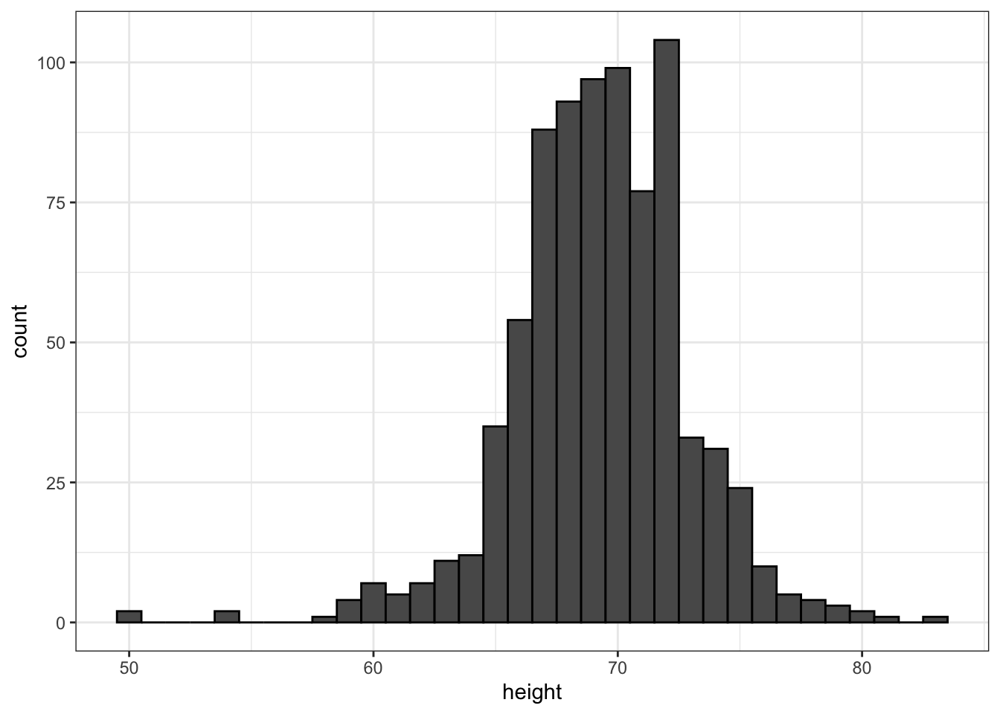
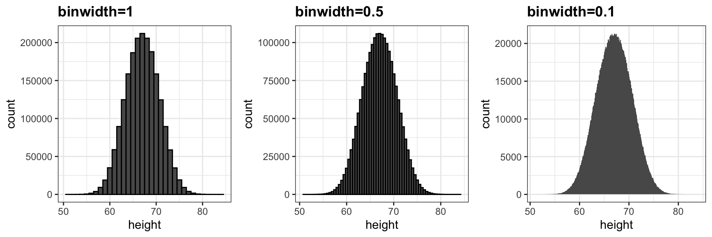
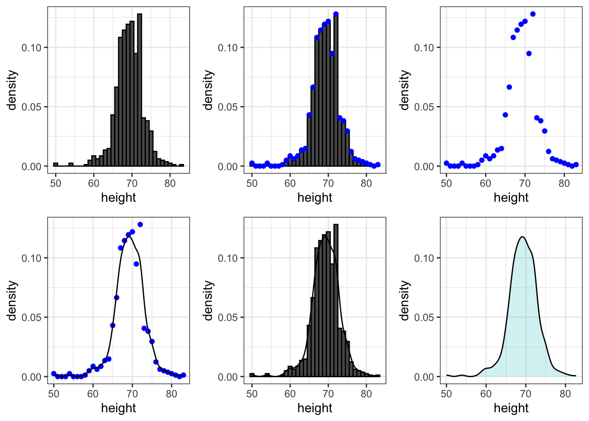
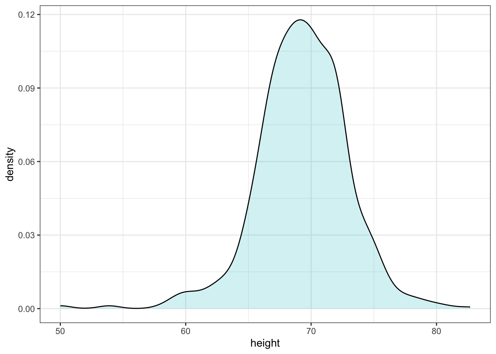
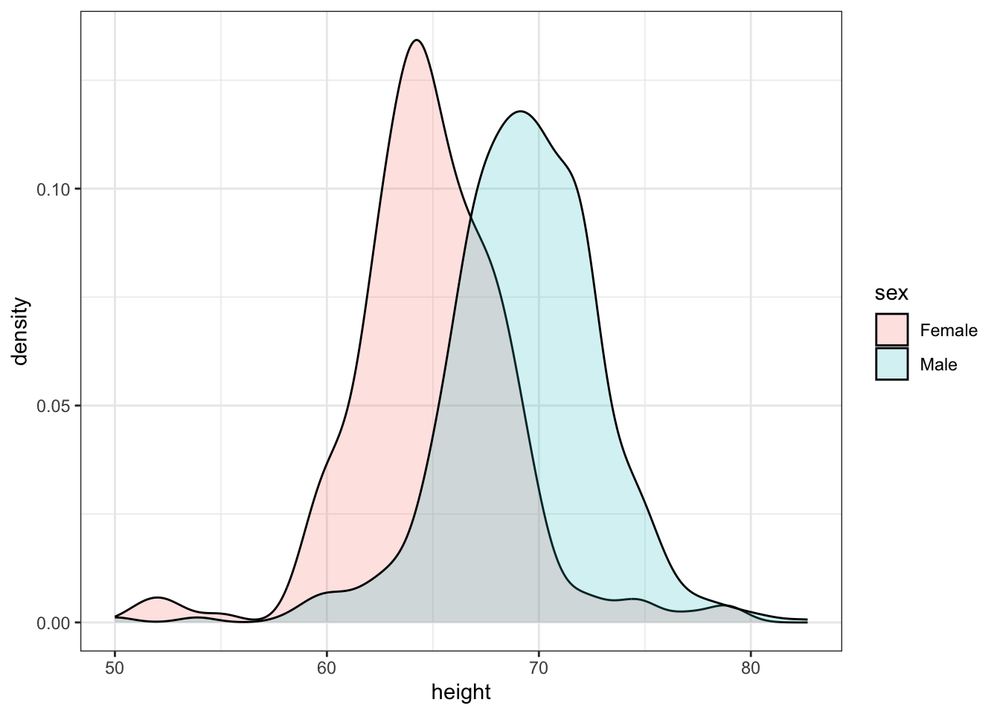
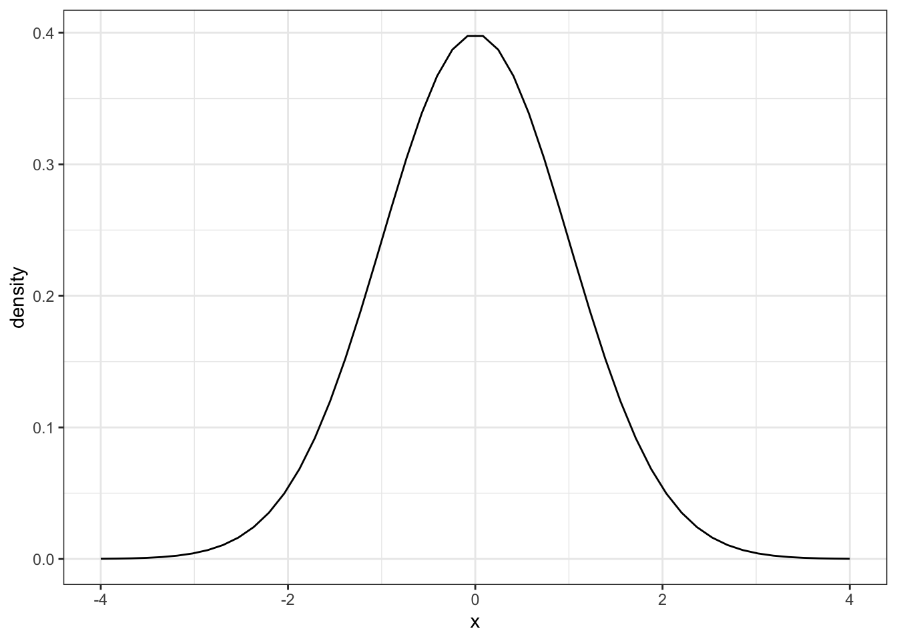
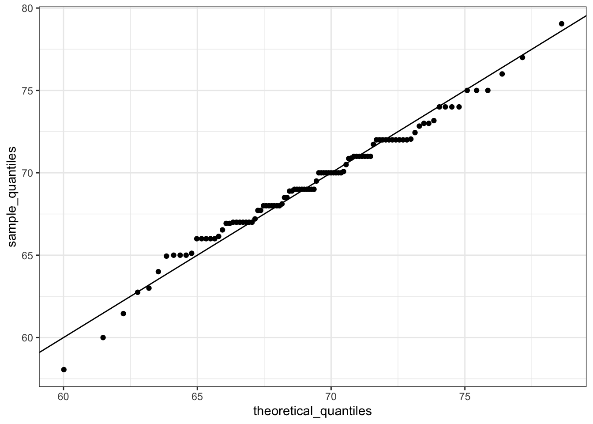
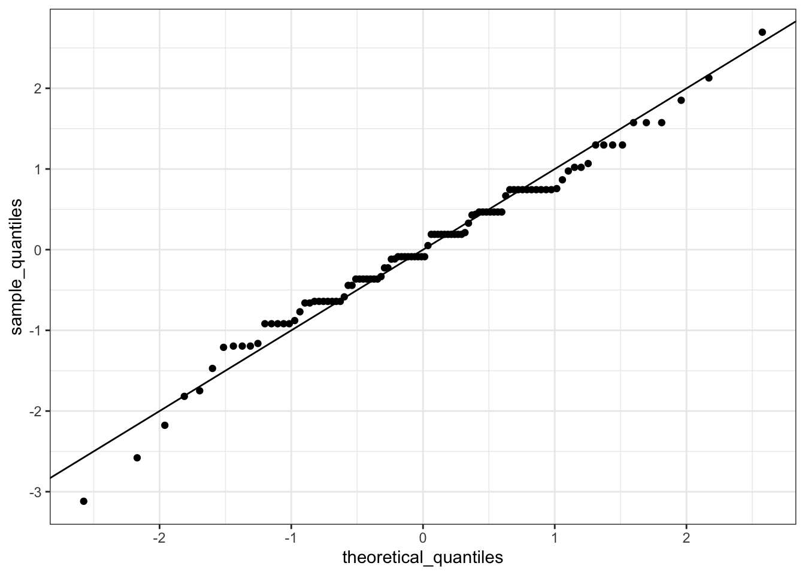
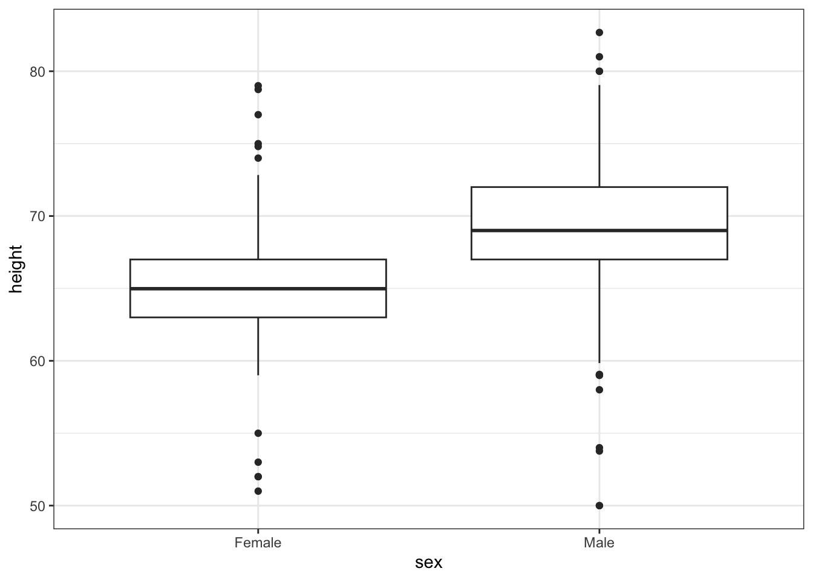

library(tidyverse)
library(dslabs)
data(heights)ggplot2: Everything you ever wanted to know
Front matter: Finishing color palettes
On Tuesday, I let us go early as I thought a part of our material was missing. It was not. Let’s jump to the end of Tuesday and talk about setting color palettes briefly.
Visualizing data distributions
Throughout your education, you may have noticed that numerical data is often summarized with the average value. For example, the quality of a high school is sometimes summarized with one number: the average score on a standardized test. Occasionally, a second number is reported: the standard deviation. For example, you might read a report stating that scores were 680 plus or minus 50 (the standard deviation). The report has summarized an entire vector of scores with just two numbers. Is this appropriate? Is there any important piece of information that we are missing by only looking at this summary rather than the entire list?
Our first data visualization building block is learning to summarize lists of factors or numeric vectors—the two primary data types that we encounter in data analytics. More often than not, the best way to share or explore this summary is through data visualization. The most basic statistical summary of a list of objects or numbers is its distribution. Once a vector has been summarized as a distribution, there are several data visualization techniques to effectively relay this information.
In this section, we first discuss properties of a variety of distributions and how to visualize distributions using a motivating example of student heights. We then discuss some principles of data visualizations more broadly, and introduce new ggplot geometries to help us along the way.
Variable types
We will be working with two types of variables: categorical and numeric. Each can be divided into two other groups: categorical can be ordinal or not, whereas numerical variables can be discrete or continuous.
When each entry in a vector comes from one of a small number of groups, we refer to the data as categorical data. Two simple examples are sex (male or female) and regions (Northeast, South, North Central, West). Some categorical data can be ordered even if they are not numbers per se, such as spiciness (mild, medium, hot). In statistics textbooks, ordered categorical data are referred to as ordinal data. In psychology, a number of different terms are used for this same idea.
Examples of numerical data are population sizes, murder rates, and heights. Some numerical data can be treated as ordered categorical. We can further divide numerical data into continuous and discrete. Continuous variables are those that can take any value, such as heights, if measured with enough precision. For example, a pair of twins may be 68.12 and 68.11 inches, respectively. Counts, such as population sizes, are discrete because they have to be integers—that’s how we count.1
Case study: describing student heights
Here we consider an artificial problem to help us illustrate the underlying concepts.
Pretend that we have to describe the heights of our classmates to ET, an extraterrestrial that has never seen humans. As a first step, we need to collect data. To do this, we ask students to report their heights in inches. We ask them to provide sex information because we know there are two different distributions by sex. We collect the data and save it in the heights data frame:
One way to convey the heights to ET is to simply send him this list of 1050 heights. But there are much more effective ways to convey this information, and understanding the concept of a distribution will help. To simplify the explanation, we first focus on male heights.
Distribution function
It turns out that, in some cases, the average and the standard deviation are pretty much all we need to understand the data. We will learn data visualization techniques that will help us determine when this two number summary is appropriate. These same techniques will serve as an alternative for when two numbers are not enough.
The most basic statistical summary of a list of objects or numbers is its distribution. The simplest way to think of a distribution is as a compact description of a list with many entries. This concept should not be new for readers of this book. For example, with categorical data, the distribution simply describes the proportion of each unique category. The sex represented in the heights dataset is:
Female Male
0.2266667 0.7733333 This two-category frequency table is the simplest form of a distribution. We don’t really need to visualize it since one number describes everything we need to know: 23% are females and the rest are males. When there are more categories, then a simple barplot describes the distribution. Here is an example with US state regions:

This particular plot simply shows us four numbers, one for each category. We usually use barplots to display a few numbers. Although this particular plot does not provide much more insight than a frequency table itself, it is a first example of how we convert a vector into a plot that succinctly summarizes all the information in the vector. When the data is numerical, the task of displaying distributions is more challenging.
Cumulative distribution functions
Numerical data that are not categorical also have distributions. In general, when data is not categorical, reporting the frequency of each entry is not an effective summary since most entries are unique. In our case study, while several students reported a height of 68 inches, only one student reported a height of 68.503937007874 inches and only one student reported a height 68.8976377952756 inches. We assume that they converted from 174 and 175 centimeters, respectively.
Statistics textbooks teach us that a more useful way to define a distribution for numeric data is to define a function that reports the proportion of the data below \(a\) for all possible values of \(a\). This function is called the cumulative distribution function (CDF). In statistics, the following notation is used:
\[ F(a) = \mbox{Pr}(x \leq a) \]
Here is a plot of \(F\) for the male height data:
Similar to what the frequency table does for categorical data, the CDF defines the distribution for numerical data. From the plot, we can see that 16% of the values are below 65, since \(F(66)=\) 0.1637931, or that 84% of the values are below 72, since \(F(72)=\) 0.841133, and so on. In fact, we can report the proportion of values between any two heights, say \(a\) and \(b\), by computing \(F(b) - F(a)\). This means that if we send this plot above to ET, he will have all the information needed to reconstruct the entire list. Paraphrasing the expression “a picture is worth a thousand words”, in this case, a picture is as informative as 812 numbers.
A final note: because CDFs can be defined mathematically—and absent any data—the word empirical is added to make the distinction when data is used. We therefore use the term empirical CDF (eCDF).
Geometries for describing distributions
Now, we’ll introduce ggplot geometries useful for describing distributions (or for many other things).
Histograms
Although the CDF concept is widely discussed in statistics textbooks, the plot is actually not very popular in practice. The main reason is that it does not easily convey characteristics of interest such as: at what value is the distribution centered? Is the distribution symmetric? What ranges contain 95% of the values? I doubt you can figure these out from glancing at the plot above. Histograms are much preferred because they greatly facilitate answering such questions. Histograms sacrifice just a bit of information to produce plots that are much easier to interpret.
The simplest way to make a histogram is to divide the span of our data into non-overlapping bins of the same size. Then, for each bin, we count the number of values that fall in that interval. The histogram plots these counts as bars with the base of the bar defined by the intervals. Here is the histogram for the height data splitting the range of values into one inch intervals: \((49.5, 50.5],(50.5, 51.5],(51.5,52.5],(52.5,53.5],...,(82.5,83.5]\)
heights %>%
filter(sex=="Male") %>%
ggplot(aes(x = height)) +
geom_histogram(binwidth = 1, color = "black")
If we send this histogram plot to some uninformed reader, she will immediately learn some important properties about our data. First, the range of the data is from 50 to 84 with the majority (more than 95%) between 63 and 75 inches. Second, the heights are close to symmetric around 69 inches. Also, by adding up counts, this reader could obtain a very good approximation of the proportion of the data in any interval. Therefore, the histogram above is not only easy to interpret, but also provides almost all the information contained in the raw list of 812 heights with about 30 bin counts.
What information do we lose? Note that all values in each interval are treated the same when computing bin heights. So, for example, the histogram does not distinguish between 64, 64.1, and 64.2 inches. Given that these differences are almost unnoticeable to the eye, the practical implications are negligible and we were able to summarize the data to just 23 numbers.
The geom_histogram layer only requires one aesthetic mapping - the x-axis. This is because the y-axis is computed from counts of the x-axis. Giving an aesthetic mapping to an additional variable for y will result in an error. Using an aesthetic mapping like fill will work - it’ll give you two histograms on top of each other. Try it! Try setting the alpha aesthetic to .5 (not an aesthetic mapping) so you can see both layers when they overlap.
Smoothed density
Smooth density plots are aesthetically more appealing than histograms. geom_density is the geometry that gives a smoothed density. Here is what a smooth density plot looks like for our heights data:
heights %>%
filter(sex=="Male") %>%
ggplot(aes(height)) +
geom_density(alpha = .2, fill= "#00BFC4", color = 'gray50') In this plot, we no longer have sharp edges at the interval boundaries and many of the local peaks have been removed. Also, the scale of the y-axis changed from counts to density. That is, the area under the curve will add up to 1, so we can read it like a probability density.
To understand the smooth densities, we have to understand estimates, a topic we don’t cover until later. However, we provide a heuristic explanation to help you understand the basics so you can use this useful data visualization tool.
The main new concept you must understand is that we assume that our list of observed values is a subset of a much larger list of unobserved values. In the case of heights, you can imagine that our list of 812 male students comes from a hypothetical list containing all the heights of all the male students in all the world measured very precisely. Let’s say there are 1,000,000 of these measurements. This list of values has a distribution, like any list of values, and this larger distribution is really what we want to report to ET since it is much more general. Unfortunately, we don’t get to see it.
However, we make an assumption that helps us perhaps approximate it. If we had 1,000,000 values, measured very precisely, we could make a histogram with very, very small bins. The assumption is that if we show this, the height of consecutive bins will be similar. This is what we mean by smooth: we don’t have big jumps in the heights of consecutive bins. Below we have a hypothetical histogram with bins of size 1:
The smaller we make the bins, the smoother the histogram gets. Here are the histograms with bin width of 1, 0.5, and 0.1:

The smooth density is basically the curve that goes through the top of the histogram bars when the bins are very, very small. To make the curve not depend on the hypothetical size of the hypothetical list, we compute the curve on frequencies rather than counts. We do this by using the double-dot object ..density... Objects surrounded by .. are objects that are calculated by ggplot. If we look at ?geom_histogram, and go down to “Computed variables”, we see that we could use ..count.. to get “number of points in a bin”; ..ncount.. for the count scaled to a max of 1; or ..ndensity.. which scales the density to a max of 1 (which is a strange one). We can manually set the y aesthetic mapping, which defaults to ..count.., to ..density..:
x %>% ggplot(aes(x = height)) +
geom_histogram(aes(y=..density..), binwidth = 0.1, color = "black") Now, back to reality. We don’t have millions of measurements. In this concrete example, we have 812 and we can’t make a histogram with very small bins.
We therefore make a histogram, using bin sizes appropriate for our data and computing frequencies rather than counts, and we draw a smooth curve that goes through the tops of the histogram bars. The following plots (loosely) demonstrate the steps that the computer goes through to ultimately create a smooth density:

Interpreting the y-axis
Note that interpreting the y-axis of a smooth density plot is not straightforward. It is scaled so that the area under the density curve adds up to 1. If you imagine we form a bin with a base 1 unit in length, the y-axis value tells us the proportion of values in that bin. However, this is only true for bins of size 1. For other size intervals, the best way to determine the proportion of data in that interval is by computing the proportion of the total area contained in that interval. For example, here are the proportion of values between 65 and 68:
The proportion of this area is about 0.3, meaning that about 30% of male heights are between 65 and 68 inches.
By understanding this, we are ready to use the smooth density as a summary. For this dataset, we would feel quite comfortable with the smoothness assumption, and therefore with sharing this aesthetically pleasing figure with ET, which he could use to understand our male heights data:
heights %>%
filter(sex=="Male") %>%
ggplot(aes(x = height)) +
geom_density(alpha=.2, fill= "#00BFC4", color = 'black') 
Note that the only aesthetic mapping is x = height, while the fill and color are set as un-mapped aesthetics.
Densities permit stratification
As a final note, we point out that an advantage of smooth densities over histograms for visualization purposes is that densities make it easier to compare two distributions. This is in large part because the jagged edges of the histogram add clutter. Here is an example comparing male and female heights:
heights %>%
ggplot(aes(height, fill=sex)) +
geom_density(alpha = 0.2, color = 'black')
With the right argument, ggplot automatically shades the intersecting region with a different color.
The normal distribution
Histograms and density plots provide excellent summaries of a distribution. But can we summarize even further? We often see the average and standard deviation used as summary statistics: a two-number summary! To understand what these summaries are and why they are so widely used, we need to understand the normal distribution.
The normal distribution, also known as the bell curve and as the Gaussian distribution, is one of the most famous mathematical concepts in history. A reason for this is that approximately normal distributions occur in many situations, including gambling winnings, heights, weights, blood pressure, standardized test scores, and experimental measurement errors. There are explanations for this, but we describe these later. Here we focus on how the normal distribution helps us summarize data.
Rather than using data, the normal distribution is defined with a mathematical formula. For any interval \((a,b)\), the proportion of values in that interval can be computed using this formula:
\[\mbox{Pr}(a < x < b) = \int_a^b \frac{1}{\sqrt{2\pi}s} e^{-\frac{1}{2}\left( \frac{x-m}{s} \right)^2} \, dx\]
You don’t need to memorize or understand the details of the formula. But note that it is completely defined by just two parameters: \(m\) and \(s\). The rest of the symbols in the formula represent the interval ends that we determine, \(a\) and \(b\), and known mathematical constants \(\pi\) and \(e\). These two parameters, \(m\) and \(s\), are referred to as the average (also called the mean) and the standard deviation (SD) of the distribution, respectively.
The distribution is symmetric, centered at the average, and most values (about 95%) are within 2 SDs from the average. Here is what the normal distribution looks like when the average is 0 and the SD is 1:

The fact that the distribution is defined by just two parameters implies that if a dataset is approximated by a normal distribution, all the information needed to describe the distribution can be encoded in just two numbers: the average and the standard deviation. We now define these values for an arbitrary list of numbers.
For a list of numbers contained in a vector x, the average is defined as:
m <- sum(x) / length(x)and the SD is defined as:
s <- sqrt(sum((x-mu)^2) / length(x))which can be interpreted as the average distance between values and their average.
Let’s compute the values for the height for males which we will store in the object \(x\):
index <- heights$sex == "Male"
x <- heights$height[index]The pre-built functions mean and sd (note that for reasons explained later, sd divides by length(x)-1 rather than length(x)) can be used here:
m <- mean(x)
s <- sd(x)
c(average = m, sd = s) average sd
69.314755 3.611024 Here is a plot of the smooth density and the normal distribution with mean = 69.3 and SD = 3.6 plotted as a black line with our student height smooth density in blue:
Now, we can ask the question “is our height data approximately normally distributed?”. The normal distribution does appear to be quite a good approximation here. We now will see how well this approximation works at predicting the proportion of values within intervals.
Standard units
For data that is approximately normally distributed, it is convenient to think in terms of standard units. The standard unit of a value tells us how many standard deviations away from the average it is. Specifically, for a value x from a vector X, we define the value of x in standard units as z = (x - m)/s with m and s the average and standard deviation of X, respectively. Why is this convenient?
First look back at the formula for the normal distribution and note that what is being exponentiated is \(-z^2/2\) with \(z\) equivalent to \(x\) in standard units. Because the maximum of \(e^{-z^2/2}\) is when \(z=0\), this explains why the maximum of the distribution occurs at the average. It also explains the symmetry since \(- z^2/2\) is symmetric around 0. Second, note that if we convert the normally distributed data to standard units, we can quickly know if, for example, a person is about average (\(z=0\)), one of the largest (\(z \approx 2\)), one of the smallest (\(z \approx -2\)), or an extremely rare occurrence (\(z > 3\) or \(z < -3\)). Remember that it does not matter what the original units are, these rules apply to any data that is approximately normal.
In R, we can obtain standard units using the function scale:
z <- scale(x)Now to see how many men are within 2 SDs from the average, we simply type:
mean(abs(z) < 2)[1] 0.9495074The proportion is about 95%, which is what the normal distribution predicts! To further confirm that, in fact, the approximation is a good one, we can use quantile-quantile plots.
Quantile-quantile plots
A systematic way to assess how well the normal distribution fits the data is to check if the observed and predicted proportions match. In general, this is the approach of the quantile-quantile plot (QQ-plot). If our heights distribution is really normal, then the 10th percentile of our heights data should be the same as the 10th percentile of a theoretical normal, as should the 20th, 30th, 33rd, 37.5th, etc. percentiles.
First let’s define the theoretical quantiles (percentiles) for the normal distribution. In statistics books we use the symbol \(\Phi(x)\) to define the function that gives us the probability of a standard normal distribution being smaller than \(x\). So, for example, \(\Phi(-1.96) = 0.025\) and \(\Phi(1.96) = 0.975\). In R, we can evaluate \(\Phi\) using the pnorm function:
pnorm(-1.96)[1] 0.0249979The inverse function \(\Phi^{-1}(x)\) gives us the theoretical quantiles for the normal distribution. So, for example, \(\Phi^{-1}(0.975) = 1.96\). In R, we can evaluate the inverse of \(\Phi\) using the qnorm function.
qnorm(0.975)[1] 1.959964Note that these calculations are for the standard normal distribution by default (mean = 0, standard deviation = 1), but we can also define these for any normal distribution. We can do this using the mean and sd arguments in the pnorm and qnorm function. For example, we can use qnorm to determine quantiles of a distribution with a specific average and standard deviation
qnorm(0.975, mean = 5, sd = 2)[1] 8.919928For the normal distribution, all the calculations related to quantiles are done without data, thus the name theoretical quantiles. But quantiles can be defined for any distribution, including an empirical one. So if we have data in a vector \(x\), we can define the quantile associated with any proportion \(p\) as the \(q\) for which the proportion of values below \(q\) is \(p\). Using R code, we can define q as the value for which mean(x <= q) = p. Notice that not all \(p\) have a \(q\) for which the proportion is exactly \(p\). There are several ways of defining the best \(q\) as discussed in the help for the quantile function.
To give a quick example, for the male heights data, we have that:
mean(x <= 69.5)[1] 0.5147783So about 50% are shorter or equal to 69 inches. This implies that if \(p=0.50\) then \(q=69.5\).
The idea of a QQ-plot is that if your data is well approximated by normal distribution then the quantiles of your data should be similar to the quantiles of a normal distribution. To construct a QQ-plot, we do the following:
- Define a vector of \(m\) proportions \(p_1, p_2, \dots, p_m\).
- Define a vector of quantiles \(q_1, \dots, q_m\) for your data for the proportions \(p_1, \dots, p_m\). We refer to these as the sample quantiles.
- Define a vector of theoretical quantiles for the proportions \(p_1, \dots, p_m\) for a normal distribution with the same average and standard deviation as the data.
- Plot the sample quantiles versus the theoretical quantiles.
Let’s construct a QQ-plot using R code. Start by defining the vector of proportions.
p <- seq(0.005, 0.995, 0.01)To obtain the quantiles from the data, we can use the quantile function like this:
sample_quantiles <- quantile(x, p)To obtain the theoretical normal distribution quantiles with the corresponding average and SD, we use the qnorm function:
theoretical_quantiles <- qnorm(p, mean = mean(x), sd = sd(x))
df = data.frame(sample_quantiles, theoretical_quantiles)To see if they match or not, we plot them against each other and draw the identity line:
ggplot(data = df, aes(x = theoretical_quantiles, y = sample_quantiles)) +
geom_point() +
geom_abline() # a 45-degree line 
Notice that this code becomes much cleaner if we use standard units:
sample_quantiles <- quantile(z, p)
theoretical_quantiles <- qnorm(p)
df2 = data.frame(sample_quantiles, theoretical_quantiles)
ggplot(data = df2, aes(x = theoretical_quantiles, y = sample_quantiles)) +
geom_point() +
geom_abline()
The above code is included to help describe QQ-plots. However, in practice it is easier to use the ggplot geometry geom_qq:
heights %>% filter(sex == "Male") %>%
ggplot(aes(sample = scale(height))) +
geom_qq() +
geom_abline()While for the illustration above we used 100 quantiles, the default from the geom_qq function is to use as many quantiles as data points.
Percentiles
Before we move on, let’s define some terms that are commonly used in exploratory data analysis.
Percentiles are special cases of quantiles that are commonly used. The percentiles are the quantiles you obtain when setting the \(p\) at \(0.01, 0.02, ..., 0.99\). We call, for example, the case of \(p=0.25\) the 25th percentile, which gives us a number for which 25% of the data is below. The most famous percentile is the 50th, also known as the median.
For the normal distribution the median and average are the same, but this is generally not the case.
Another special case that receives a name are the quartiles, which are obtained when setting \(p=0.25,0.50\), and \(0.75\).
ggplot2 geometries
We now will briefly discuss some of the geometries involved in the plots above. We will discuss ggplot2 in (excruciating) detail into next week. For now, we will briefly demonstrate how to generate plots related to distributions.
Barplots
To generate a barplot we can use the geom_bar geometry. The default is to count the number of each category and draw a bar. Here is the plot for the regions of the US.
murders %>% ggplot(aes(region)) + geom_bar()We often already have a table with a distribution that we want to present as a barplot. Here is an example of such a table:
data(murders)
tab <- murders %>%
count(region) %>%
mutate(proportion = n/sum(n))
tab region n proportion
1 Northeast 9 0.1764706
2 South 17 0.3333333
3 North Central 12 0.2352941
4 West 13 0.2549020We no longer want geom_bar to count, but rather just plot a bar to the height provided by the proportion variable. For this we need to provide x (the categories) and y (the values) and use the stat="identity" option. This tells R to just use the actual value in proportion for the y aesthetic. This is only necessary when you’re telling R that you have your own field (proportion) that you want to use instead of just the count.
tab %>% ggplot(aes(x = region, y = proportion)) + geom_bar(stat = "identity")Histograms
To generate histograms we use geom_histogram. By looking at the help file for this function, we learn that the only required argument is x, the variable for which we will construct a histogram. We dropped the x because we know it is the first argument. The code looks like this:
heights %>%
filter(sex == "Female") %>%
ggplot(aes(height)) +
geom_histogram()If we run the code above, it gives us a message:
stat_bin()usingbins = 30. Pick better value withbinwidth.
We previously used a bin size of 1 inch (of observed height), so the code looks like this:
heights %>%
filter(sex == "Female") %>%
ggplot(aes(height)) +
geom_histogram(binwidth = 1)Finally, if for aesthetic reasons we want to add color, we use the arguments described in the help file. We also add labels and a title:
heights %>%
filter(sex == "Female") %>%
ggplot(aes(height)) +
geom_histogram(binwidth = 1, fill = "blue", col = "black") +
labs(x = "Male heights in inches", title = "Histogram")Density plots
To create a smooth density, we use the geom_density. To make a smooth density plot with the data previously shown as a histogram we can use this code:
heights %>%
filter(sex == "Female") %>%
ggplot(aes(x = height)) +
geom_density()To fill in with color, we can use the fill argument.
heights %>%
filter(sex == "Female") %>%
ggplot(aes(x = height)) +
geom_density(fill="blue")To change the smoothness of the density, we use the adjust argument to multiply the default value by that adjust. For example, if we want the bandwidth to be twice as big we use:
heights %>%
filter(sex == "Female") %>%
ggplot(aes(x = height)) +
geom_density(fill="blue", adjust = 2)Boxplots
The geometry for boxplot is geom_boxplot. As discussed, boxplots are useful for comparing distributions. For example, below are the previously shown heights for women, but compared to men. For this geometry, we need arguments x as the categories, and y as the values.

Note that our x-axis is a categorical variable. The order is determined by either the factor variable levels in heights or, if no levels are set, in the order in which the sex variable first encounters them. Later on, we’ll learn how to change the ordering.
We can do much more with boxplots when we have more data. Right now, our heights data has only two variables - sex and height. Let’s say we took the measurements over two different years - 2010 and 2020. That’s not in our data, so purely for exposition, we’ll add it by randomly drawing a year for each observation. We’ll do this with sample
heights = heights %>%
dplyr::mutate(year = sample(x = c(2010, 2020), size = n(), replace = TRUE, prob = c(.5, .5)))
head(heights) sex height year
1 Male 75 2020
2 Male 70 2010
3 Male 68 2020
4 Male 74 2010
5 Male 61 2020
6 Female 65 2010Now, let’s look at the boxplot of heights by sex, but broken out by year. We can do this by adding year as an aesthetic mapping. Because our year variable is an integer, R will start by thinking it’s a continuous numeric, but we want to treat it as a discrete variable. So, we wrap it in as.factor() to force R to recognize it as a discrete variable.
heights %>% ggplot(aes(x = sex, y = height, fill = as.factor(year))) +
geom_boxplot() +
labs(fill = 'Year')
Now we have each sex broken out by year! Since we randomly assigned year to our data (and didn’t actually take samples in two different decades), the distribution between years and within sex is nearly identical.
What if we wanted to have year on the x-axis, but then put the sex boxplots next to each other. This would let us compare the difference in heights by sex over the two sample years.
heights %>% ggplot(aes(x = year, y = height, fill = sex)) +
geom_boxplot() +
labs(fill = 'Sex')Woah. Wait. What? Remember, in our data, class(heights$year) is numeric, so when we ask R to put year on the x-axis, it thinks it’s plotting a number. It gives us a nonsense x-axis. How do we fix this? We force as.factor(year) to tell R that yes, year is a categorical variable. Note that we didn’t have to use as.factor(sex) - that’s because sex is already a categorical variable.
heights %>% ggplot(aes(x = as.factor(year), y = height, fill = sex)) +
geom_boxplot() +
labs(fill = 'Sex')Now we can see the height difference by sex, by year.
We will explore more with boxplots and colors in our next lecture.
Try it!
Start by loading the dplyr and ggplot2 library as well as the murders and heights data.
library(dplyr)
library(ggplot2)
library(dslabs)
data(heights)
data(murders)- First, create a new variable in
murdersthat hasmurders_per_capita.
murders = murders %>%
mutate(........)Make a histogram of murders per capita. Use the default values for color and fill, but make sure you label the x-axis with a meaningful label.
Make the same histogram, but set the fill aesthetic to MSU Green and the color to black.
Do the same, but make it a smooth density plot
Finally, plot the smooth density but use a
fillaesthetic mapping so that eachregion’s density is shown. Set a meaningful title on the legend, and make sure you make the density transparent so we can see all of the region’s densities (seealphaaesthetic).Now, try making a boxplot to show the same data - the distribution across states of murders per capita by region. What is the average Northeastern state’s murder rate? What about the average Southern state?
Footnotes
Keep in mind that discrete numeric data can be considered ordinal. Although this is technically true, we usually reserve the term ordinal data for variables belonging to a small number of different groups, with each group having many members. In contrast, when we have many groups with few cases in each group, we typically refer to them as discrete numerical variables. So, for example, the number of packs of cigarettes a person smokes a day, rounded to the closest pack, would be considered ordinal, while the actual number of cigarettes would be considered a numerical variable. But, indeed, there are examples that can be considered both numerical and ordinal when it comes to visualizing data.↩︎